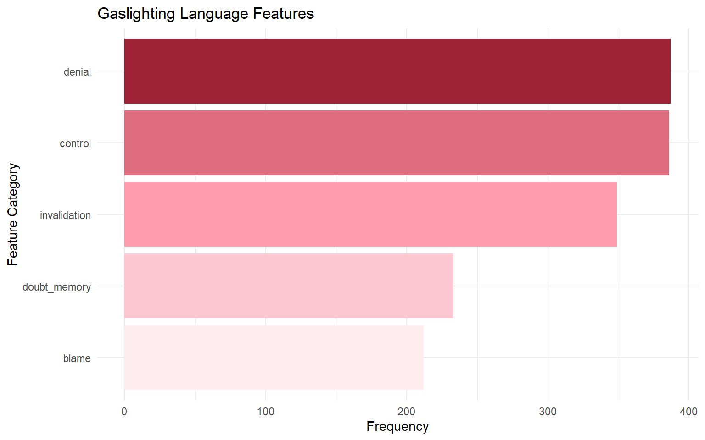
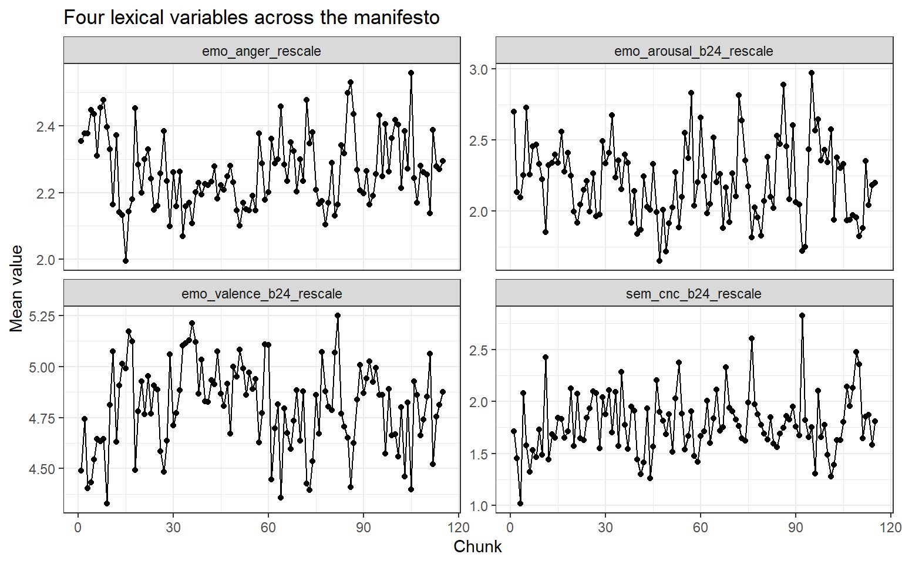
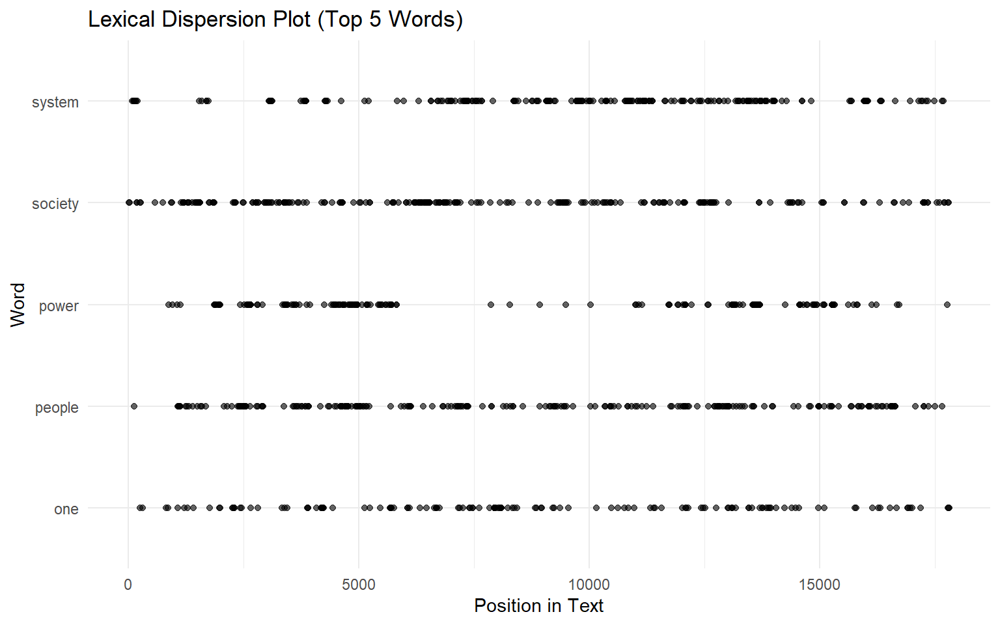

CSD5730, Natural Language Processing for Biobehavioral and Neuroscience Applications, taught text analysis in R from the ground up.
Each week added a step to one pipeline: cleaning raw text, building a corpus, counting and comparing words, and finally testing hypotheses with dictionaries and psycholinguistic norms.
The cleaning function at the center of that pipeline started in Week 3 as a short base R script and grew into peace_genie_pro(), which every later project reuses.

This project asked whether gaslighting shows up as a pattern in word use, or only as scattered moments of disagreement. Texts in the Gaslighting Dataset were cleaned with peace_genie_pro(), which keeps apostrophes so phrases like "you didn't" and "I never said that" survive cleaning. A dictionary drawn from published gaslighting research sorted words into five categories: denial, blame, emotional invalidation, control, and doubt about memory. Denial and control language were the most frequent, followed by invalidation, while doubt about memory and blame appeared less often but consistently. The hypothesis was supported, since all five features recurred across the corpus.

The hypothesis was that the Unabomber Manifesto's language would grow angrier, more aroused, and more negative as it went on, while staying abstract throughout. The text was split into 300-word chunks, lemmatized, and joined to the Reilly Lab psycholinguistic database to score anger, arousal, valence, and concreteness. Anger, arousal, and valence moved up and down across the chunks without building toward the end. Concreteness stayed low the whole way, which fits the manifesto's focus on systems and society. The hypothesis was partly supported.

This assignment built a full cleaning and analysis pipeline for the Unabomber Manifesto, starting from a raw text file on GitHub. A base R cleaning function lowercased the text and removed numbers, punctuation, and extra spaces before it became a quanteda corpus. Cleaning and removing stopwords cut the text from 34,085 tokens to 17,891, and the type-token ratio rose from 0.13 to 0.22. The most frequent words after cleaning were society, system, people, power, and one. A lexical dispersion plot then showed where those words fall across the document.
Every weekly report from the course, rendered from R Markdown.
Creating strings, splitting text into words, and counting letters per word.
Open reportCleaning and tokenizing text with base R, plus an annotated cheat sheet.
Open report Cheat sheetA first cleaning function for a messy text file and a check of how cleaning changes token counts.
Open reportCorpus building, lexical comparison, a dispersion plot, and a wordcloud.
Open reportAn upgraded cleaner, custom styling, and psycholinguistic scores across the manifesto.
Open reportA theory-driven dictionary to test for patterned gaslighting language.
Open report